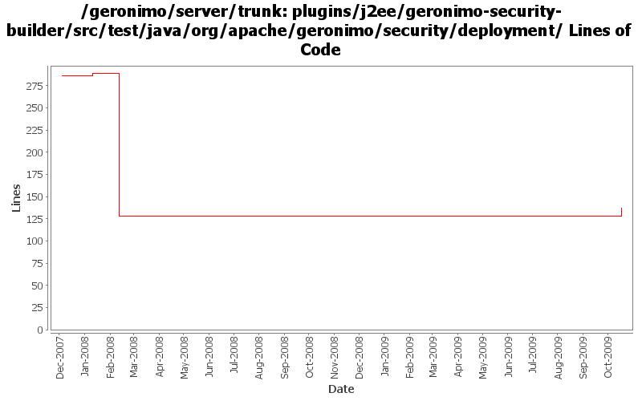

[root]/plugins/j2ee/geronimo-security-builder/src/test/java/org/apache/geronimo/security/deployment

| Author | Changes | Lines of Code | Lines per Change |
|---|---|---|---|
| Totals | 7 (100.0%) | 31 (100.0%) | 4.4 |
| djencks | 6 (85.7%) | 23 (74.2%) | 3.8 |
| vamsic007 | 1 (14.3%) | 8 (25.8%) | 8.0 |
get geronimo-security-builder to build
11 lines of code changed in 1 file:
GERONIMO-4531, GERONIMO-4523 Simplify builder collections. Make security principal-role mappings independent of the application
1 lines of code changed in 1 file:
GERONIMO-3840 fix the build: introduce a MockConfigurationManager used everywhere
8 lines of code changed in 1 file:
GERONIMO-3742 Split up namespace upgrades into the modules that need them
3 lines of code changed in 1 file:
GERONIMO-3654 Moving o.a.g.s.jaas.NamedUPCredentailLoginModule to o.a.g.s.realm.providers
o Copied o.a.g.s.jaas.NamedUPCredentailLoginModule to o.a.g.s.realm.providers.NamedUsernamePasswordCredentialLoginModule
o Marked NamedUPCredentialLoginModule as deprecated
o Changed all references from o.a.g.s.jaas.NamedUPCredentialLoginModule to o.a.g.s.realm.providers.NamedUsernamePasswordCredentialLoginModule
8 lines of code changed in 1 file:
GERONIMO-3607 Add 'assemble a server' support to geronimo and use it from car-maven-plugin and gshell. Not yet available in the console. Better repository support would be desirable
0 lines of code changed in 2 files: